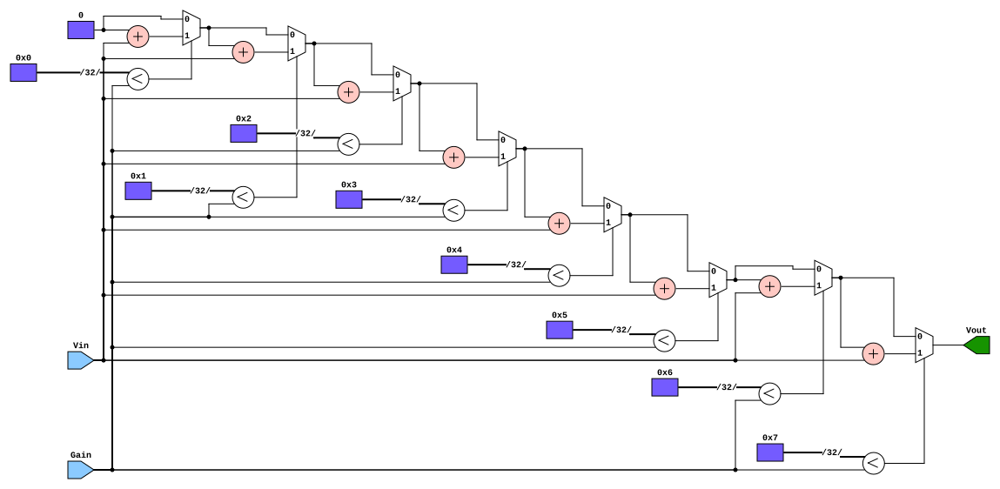

Operational Amplifier Modeling & Synthesis in Verilog: From Behavioral Abstraction to Iterative Addition Accumulators
Silicon Research Collective, Timarpur / Overland Park
Abstract — In my quest to synthesize Verilog models for diverse Small-Scale (SSI) and Medium-Scale Integration (MSI) semiconductor devices, I investigate the operational amplifier. Drawing inspiration from radiation-tolerant integrated circuits such as the Texas Instruments OPA4H199-SP, this paper evaluates the transition between a pure behavioral representation and a discrete architectural realization. We demonstrate how eliminating high-overhead abstract multiplier operators in favor of an iterative conditional-addition loop produces an efficient accumulator structure, confirmed via Yosys gate-level netlists and simulated spatial redstone logic.
1. Operational Amplifier Foundations
In my quest to make Verilog models out of a multitude of different SSI and MSI semiconductor products, I have now gotten to the operational amplifier. My primary inspiration for this design is the OPA4H199-SP from Texas Instruments. First, I started with the basic transfer function of an op-amp, which is the linear amplification of an input signal by multiplying the voltage by the gain:
module OpAmp(
input wire [x:0] Vin,
output wire [x:0] Vout,
input wire [x:0] Gain
);
assign Vout = Gain * Vin;
endmoduleI chose to represent an arbitrary amount of bits with variable $x$ [1]. I was not sure how large the buses needed to be in designing this first simplest model, so I decided to leave it up to my later discretion.
This is an ideal and general op-amp that has no resistance, slew rate limits, feedback networks, or added physical complexity to achieve specific frequency responses. During creation, I asked myself whether I wanted an op-amp that would be created in perfect imitation of the real deal or one which is the perfect abstract model. I settled upon the latter, as imitating real-world analog silicon constraints with test benches and design features was not my goal in creating this Verilog op-amp.
2. Ideal Parameters & Iterative Addition
We have to consider, then, ideal variables for the op-amp so as to create the perfect abstract model as I have discussed. Finding the characteristics and specifications turned out to be easier than I thought thanks to documentation from power semiconductor manufacturers like Texas Instruments and Toshiba, along with my very own University of Kansas lecture handouts.
In order to get closer to the real silicon in my design abstraction, I shall remove the * multiplication operator and replace it with an always loop which is particularly inefficient in clock cycles but easy to understand conceptually. Essentially working as any formulaic loop, it takes an iterative variable $i$, and compares it to the maximum gain outlined as a constant parameter. If $i$ is less than the gain, the output voltage is incremented by the input voltage, and this is repeated until $i$ reaches its threshold of eight iterations, replicating multiplication through brute-force addition:
module OpAmp(
input wire Vin,
input wire Gain,
output reg Vout
);
parameter MAX_GAIN = 8;
integer i;
always @(*) begin
Vout = 0;
for (i = 0; i < MAX_GAIN; i = i + 1) begin
if (i < Gain)
Vout = Vout + Vin;
end
end
endmodule3. Gate-Level Synthesis & Logic Diagram
The Yosys digital logic diagram is given below. The iterative variables are given by the memory blocks $0\text{x}0$ through $0\text{x}7$, with the multiplexer selectors being the comparison $0\text{xA} < \text{Gain}$ ($A$ representing any value 0–7). The initial 0 mux input is 0, with each following mux 0 input being the output of the previous mux. The initial 1 mux input is the addition of the iterative variable and the input voltage, with the final product that routes to the output voltage register being the last mux output.



4. Spatial Simulation in MinecraftHDL
Of course, we could not create a Verilog circuit if we didn't also model it with Minecraft redstone as well! With the ability to do this being none of my own but due to the help of the amazing MinecraftHDL project authored by Frank Denis. Minecraft repeaters, comparators, and redstone dust synthesize the exact boolean logic gates into an explorable physical space.